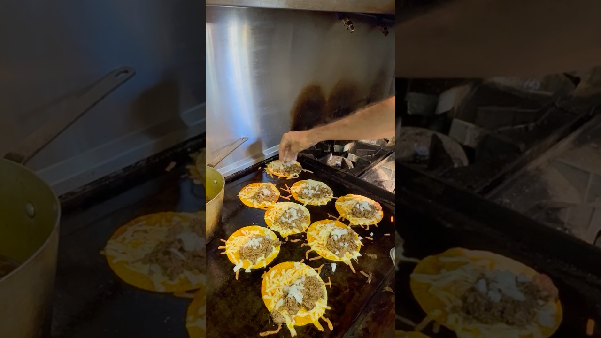

The griddle-day payoff, in the spirit of Old's Cool Kevmo's short: cheese seared straight onto the flat-top, birria folded in, consommé for dunking. Start with a pot of Recipe 032's birria — this page is just the landing.
Warm the beef in a splash of consommé so it's juicy, not soupy. Keep the rest of the consommé hot on a back burner — that's the dipping cup.
Heat a griddle or wide nonstick pan over medium-high. Dip one side of each tortilla in the reserved red fat — fat crisps, broth sogs — and give it 15 seconds per side on the griddle.
Scatter a handful of cheese directly on the griddle, let it sizzle to a lacy edge, and lay a tortilla on top. Press, scrape, flip — cheese-crust up. Beef, onion, and cilantro on one half.
Fold and press with a spatula until both sides are mahogany and the seam seals. Repeat; keep finished tacos on a rack, not a plate.
Serve hot with lime and a cup of consommé topped with a little onion and cilantro. Dip every bite. Yes, every bite.